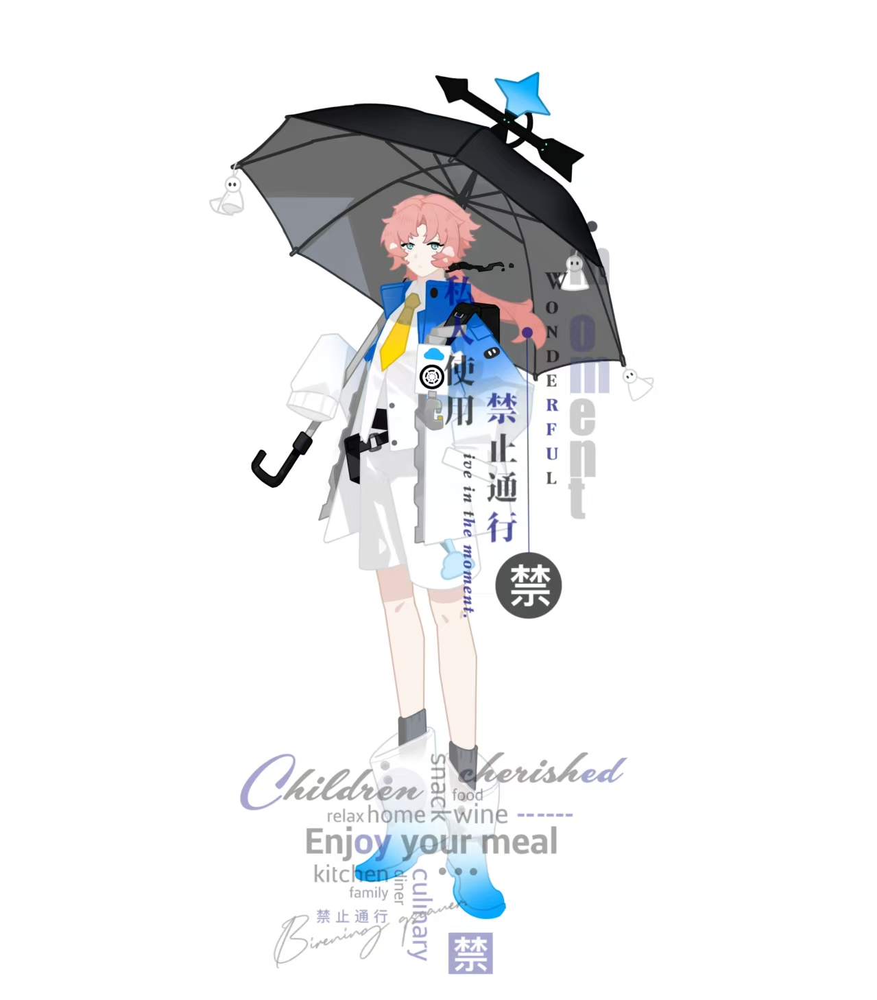

天气预报从未出错。
03
STORY
主线与支线故事
MAIN STORY01
天工气象局异常记录
《天气预报都是骗人的》
一条烧焦的黑色发带，让本不该相遇的两个人再次产生交集，也将卡列尼亚引向那些“不存在”的气象记录。
STORY
SIDE STORY00
主线之外的气象记录
支线故事
收录角色日常、过去经历与主线之外的片段。后续可按照人物、时间线或故事类型分类阅读。
ARCHIVE
TENKO WEATHER BUREAU ORIGINAL STORY
THE WEATHER
FORECAST IS A LIE.

KALENIA / WEATHER FORECASTER
当天空第一次没有如期放晴，
谎言之外，才是真正的世界。
关于这个故事
天气预报从未出错。
至少，他一直这么相信。
天工气象局的天气预报从未出错。至少，十四岁的预报员卡列尼亚一直这么相信。十七岁的米拉贝尔对此只有两个字：骗人。
一条烧焦的黑色发带，让本不该相遇的两个人再次产生交集，也将卡列尼亚引向那些“不存在”的气象记录。
一个每天微笑着预报明天，一个早已见过明天的模样。当天空第一次没有如期放晴，卡列尼亚终于发现——天气预报都是骗人的。
天气预报从未出错。
边缘存在烧焦痕迹。
该记录“不存在”。
人物档案
WEATHER FORECASTER
KALENIA
“天工气象局的天气预报，从来不会出错。”
每天微笑着播报明天，也始终相信天工气象局从未出错。直到那条烧焦的黑色发带再次出现，他所相信的晴天开始产生裂缝。
主线与支线故事
天工气象局异常记录
一条烧焦的黑色发带，让本不该相遇的两个人再次产生交集，也将卡列尼亚引向那些“不存在”的气象记录。
主线之外的气象记录
收录角色日常、过去经历与主线之外的片段。后续可按照人物、时间线或故事类型分类阅读。
作品画廊